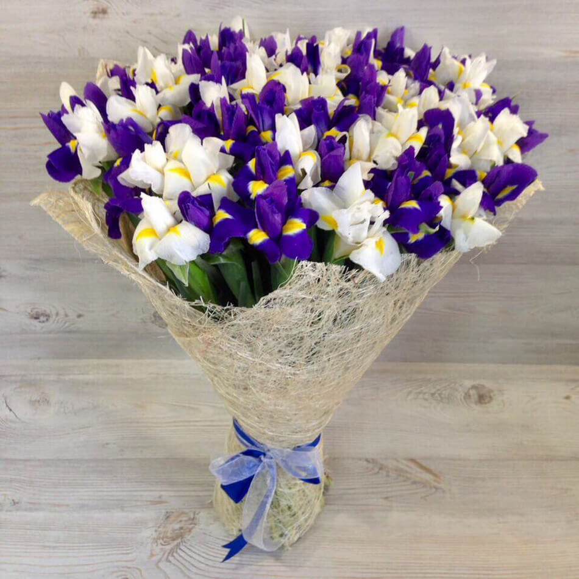

Ирис — изящный, утончённый цветок с необычной формой, напоминающей орхидею. Символ веры, надежды и мудрости. Назван в честь богини радуги Ириды.
Ирисы известны человечеству более 4000 лет. В Древнем Египте их выращивали ещё в XV веке до н.э., а на острове Крит в Кносском дворце найдено изображение ириса возрастом 4000 лет. Своё название цветок получил от греческой богини радуги Ириды за невероятное разнообразие оттенков. Существует более 800 видов ирисов и тысячи сортов. Они бывают карликовыми (15-20 см) и высокими (до 120 см), с бородками и без, одноцветными и двухцветными. Особенность ирисов — три верхних лепестка (стандарты) и три нижних (фолы) часто отличаются по цвету. Аромат ирисов нежный, тонкий, его используют в парфюмерии. В срезке ирисы стоят недолго, но очень эффектны в букетах.